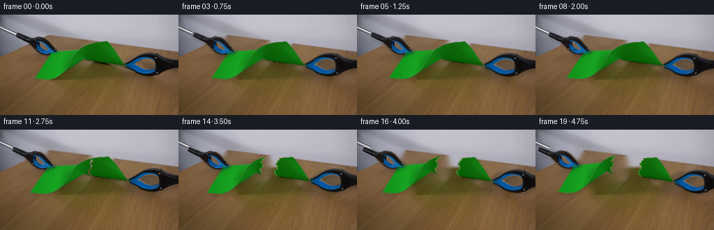
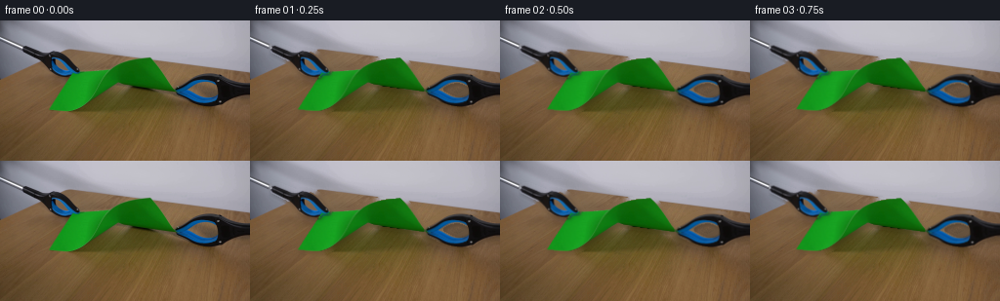

CODING AGENTS AS PIXEL WORLD MODELS
traex/GPT-5.6-Sol · 0045
点击播放 · 原生 RGB 像素
逐轮保存的候选
回放视频、检查图与代码变化。
每份候选均可单独播放。实际图片检查记录在下方工具轨迹中。
候选 01播放与检查图
点击播放 · 原生 RGB 像素


展开代码变化
--- 上一保存版本
+++ 本次保存版本
@@ -0,0 +1,194 @@
+from pathlib import Path
+import cv2
+import numpy as np
+from PIL import Image
+import artifact_io
+
+# Analytic 2-D continuation of the photographed demonstration. The first
+# image supplies all texture and colour; later images only inpaint exposed
+# tabletop and move/deform cutouts from that image.
+ROOT = Path(__file__).resolve().parent
+im = np.asarray(Image.open(ROOT / "first_frame.png").convert("RGB"), dtype=np.uint8)
+h, w = im.shape[:2]
+bgr = cv2.cvtColor(im, cv2.COLOR_RGB2BGR)
+hsv = cv2.cvtColor(bgr, cv2.COLOR_BGR2HSV)
+
+# The strongly green connected region is the sheet. Filling its exterior
+# contour also retains the shaded, low-saturation parts of the same paper.
+green = cv2.inRange(hsv, (34, 72, 24), (96, 255, 255))
+contours, _ = cv2.findContours(green, cv2.RETR_EXTERNAL, cv2.CHAIN_APPROX_NONE)
+pc = max(contours, key=cv2.contourArea)
+paper = np.zeros((h, w), np.uint8)
+cv2.drawContours(paper, [pc], -1, 255, cv2.FILLED)
+paper = cv2.morphologyEx(paper, cv2.MORPH_CLOSE, np.ones((3, 3), np.uint8))
+
+# Segment each blue-black gripper in its own end-of-frame ROI. Connecting
+# the blue highlights to nearby dark pixels recovers the complete jaws and
+# shafts without pulling similarly coloured paper shadow into the mask.
+H, S, V = cv2.split(hsv)
+blueblack = (((H >= 92) & (H <= 148) & (S >= 30) & (V <= 205)) |
+ ((V <= 82) & ((S < 105) | (H >= 88))))
+
+def tool_component(side):
+ roi = np.zeros((h, w), np.uint8)
+ if side == "left":
+ poly = np.array([[17,20],[42,20],[83,35],[88,62],[57,63],[20,39]], np.int32)
+ else:
+ poly = np.array([[174,52],[256,49],[256,94],[199,91],[174,78]], np.int32)
+ cv2.fillPoly(roi, [poly], 255)
+ raw = (blueblack & (roi > 0)).astype(np.uint8) * 255
+ raw = cv2.morphologyEx(raw, cv2.MORPH_CLOSE, np.ones((5,5), np.uint8))
+ n, labels, stats, _ = cv2.connectedComponentsWithStats(raw)
+ if n <= 1:
+ return raw
+ # Retain the main component plus close blue-black islands belonging to it.
+ idx = 1 + np.argmax(stats[1:, cv2.CC_STAT_AREA])
+ main = (labels == idx).astype(np.uint8) * 255
+ main = cv2.dilate(main, np.ones((3,3), np.uint8), iterations=1)
+ return cv2.bitwise_and(main, roi)
+
+left_tool = tool_component("left")
+right_tool = tool_component("right")
+tools = cv2.bitwise_or(left_tool, right_tool)
+
+# Reconstruct only what becomes exposed. A narrow expansion removes old
+# anti-aliased edges and contact shadows. Telea interpolation preserves the
+# smooth neutral backdrop and the low-frequency grain of the brown bench.
+remove = cv2.bitwise_or(paper, tools)
+remove = cv2.dilate(remove, np.ones((7,7), np.uint8), iterations=1)
+base_bgr = cv2.inpaint(bgr, remove, 5, cv2.INPAINT_TELEA)
+base = cv2.cvtColor(base_bgr, cv2.COLOR_BGR2RGB)
+
+# Fill the tiny places where a jaw lies over the paper so its texture remains
+# continuous when the jaw is composited back on top.
+cover_on_paper = cv2.bitwise_and(cv2.dilate(tools, np.ones((5,5),np.uint8)), paper)
+paper_bgr = cv2.inpaint(bgr, cover_on_paper, 4, cv2.INPAINT_TELEA)
+paper_rgb = cv2.cvtColor(paper_bgr, cv2.COLOR_BGR2RGB)
+
+# Geometry in the original image: jaw contact points and pulling axis.
+L = np.array([74.0, 54.0])
+R = np.array([181.5, 73.0])
+axis = R - L
+axis /= np.linalg.norm(axis)
+perp = np.array([-axis[1], axis[0]])
+center = (L + R) * 0.5
+halfspan = np.dot(R - L, axis) * 0.5
+
+yy, xx = np.mgrid[0:h, 0:w]
+dx = xx - center[0]
+dy = yy - center[1]
+scoord = dx * axis[0] + dy * axis[1]
+vcoord = dx * perp[0] + dy * perp[1]
+# An irregular, fibrous tear path across the narrow waist of the paper.
+tear_offset = (1.45*np.sin(vcoord*0.52 + .7) +
+ .75*np.sin(vcoord*1.31 - .3) +
+ .35*np.sign(np.sin(vcoord*2.17)))
+left_piece = ((paper > 0) & (scoord < tear_offset)).astype(np.uint8) * 255
+right_piece = ((paper > 0) & (scoord >= tear_offset)).astype(np.uint8) * 255
+
+# Pale broken fibres on the two newly exposed edges.
+edge_band = (paper > 0) & (np.abs(scoord - tear_offset) < 1.35)
+fibre_rgb = paper_rgb.copy()
+fibre_colour = np.array([157, 190, 105], np.float32)
+fibre_rgb[edge_band] = np.clip(.48*fibre_rgb[edge_band] + .52*fibre_colour, 0, 255).astype(np.uint8)
+
+
+def affine_stretch(pull):
+ """Stretch along the pulling axis, keeping the centre stationary."""
+ k = pull / halfspan
+ A = np.eye(2) + k * np.outer(axis, axis)
+ t = center - A @ center
+ return np.array([[A[0,0],A[0,1],t[0]], [A[1,0],A[1,1],t[1]]], np.float32)
+
+
+def rigid_about(grip, translation, angle_deg):
+ # Standard Cartesian rotation represented in image coordinates.
+ a = np.deg2rad(angle_deg)
+ c, s = np.cos(a), np.sin(a)
+ A = np.array([[c, -s], [s, c]], np.float64)
+ t = grip + translation - A @ grip
+ return np.array([[A[0,0],A[0,1],t[0]], [A[1,0],A[1,1],t[1]]], np.float32)
+
+
+def warp(arr, M, interp=cv2.INTER_LINEAR):
+ return cv2.warpAffine(arr, M, (w,h), flags=interp, borderMode=cv2.BORDER_CONSTANT, borderValue=0)
+
+
+def composite(dst, src, alpha):
+ a = alpha.astype(np.float32)[...,None] / 255.0
+ return np.clip(src.astype(np.float32)*a + dst.astype(np.float32)*(1-a), 0, 255).astype(np.uint8)
+
+
+def cast_shadow(dst, alpha, strength=.16, ox=2, oy=3, blur=3.0):
+ M = np.array([[1,0,ox],[0,1,oy]], np.float32)
+ sh = warp(alpha, M)
+ sh = cv2.GaussianBlur(sh, (0,0), blur)
+ a = (sh.astype(np.float32)/255.0 * strength)[...,None]
+ return np.clip(dst.astype(np.float32)*(1-a), 0, 255).astype(np.uint8)
+
+frames = [im.copy()]
+for f in range(1, 20):
+ # Initial tightening, elastic loading, then the final outward pull.
+ if f <= 4:
+ pull = 0.45 + 0.62*f
+ elif f <= 11:
+ pull = 3.0 + 0.34*(f-4)
+ else:
+ u = (f-11)/8.0
+ u = u*u*(3-2*u)
+ pull = 5.4 + 13.8*u
+
+ canvas = base.copy()
+ if f <= 11:
+ Mp = affine_stretch(pull)
+ pa = warp(paper, Mp)
+ pi = warp(paper_rgb, Mp)
+
+ # Tear propagates from the lower free edge toward the upper edge over
+ # four frames. Its sub-pixel width increases as fibres part.
+ if f >= 8:
+ frac = (f-7)/4.0
+ front = 9.0 - frac*31.0 # v: lower edge toward upper edge
+ gapw = 0.55 + 0.55*frac
+ crack_src = ((paper > 0) & (vcoord >= front) &
+ (np.abs(scoord-tear_offset) <= gapw)).astype(np.uint8)*255
+ crack = warp(crack_src, Mp)
+ pa[crack > 80] = 0
+ canvas = cast_shadow(canvas, pa, .13, 2, 3, 2.4)
+ canvas = composite(canvas, pi, pa)
+ # Tool matrices follow their respective stretched contact points.
+ tl = -axis*pull
+ tr = axis*pull
+ Mltool = rigid_about(L, tl, 0.0)
+ Mrtool = rigid_about(R, tr, 0.0)
+ else:
+ u = (f-11)/8.0
+ u = u*u*(3-2*u)
+ # After rupture both halves relax and travel rigidly with their jaws.
+ sep = 0.9 + 1.4*u
+ tl = -axis*pull + perp*(0.45*sep)
+ tr = axis*pull - perp*(0.45*sep)
+ Mltool = rigid_about(L, tl, -1.5*u)
+ Mrtool = rigid_about(R, tr, 1.7*u)
+ Mlp = Mltool
+ Mrp = Mrtool
+ la, ra = warp(left_piece, Mlp), warp(right_piece, Mrp)
+ li, ri = warp(fibre_rgb, Mlp), warp(fibre_rgb, Mrp)
+ canvas = cast_shadow(canvas, cv2.bitwise_or(la,ra), .14, 2, 3, 2.5)
+ canvas = composite(canvas, li, la)
+ canvas = composite(canvas, ri, ra)
+
+ # Blue-black jaws remain above the sheet, visibly holding its corners.
+ lta = warp(left_tool, Mltool)
+ rta = warp(right_tool, Mrtool)
+ lti = warp(im, Mltool)
+ rti = warp(im, Mrtool)
+ canvas = cast_shadow(canvas, cv2.bitwise_or(lta,rta), .18, 2, 2, 2.0)
+ canvas = composite(canvas, lti, lta)
+ canvas = composite(canvas, rti, rta)
+ frames.append(canvas)
+
+frames = np.stack(frames).astype(np.uint8)
+assert frames.shape == (20,144,256,3)
+assert np.array_equal(frames[0], im)
+artifact_io.save(frames, ROOT)
可观测工具轨迹
实际执行的命令与返回图片。
命令 1exit 0
/bin/bash -lc "cat GENERATION_RULES.md && printf '\\n--- PROMPT ---\\n' && cat prompt.txt"
命令 2exit 0
/bin/bash -lc "find . -maxdepth 2 -type f -printf '%p\\n' | sort && printf '\\n--- image metadata ---\\n' && python3 - <<'PY'
from PIL import Image
im=Image.open('first_frame.png')
print(im.mode, im.size)
PY"命令 3exit 0
/bin/bash -lc "python3 - <<'PY'
from PIL import Image
import numpy as np
from collections import Counter
im=np.asarray(Image.open('first_frame.png'))
# quantize to 16 bins
q=(im//16)*16
for c,n in Counter(map(tuple,q.reshape(-1,3))).most_common(25): print(c,n)
# mean colors blocks 16x16-ish
print('\\nblock means 16x18 grid: hue class')
# classify classes by RGB
for y in range(0,144,8):
s=''
for x in range(0,256,8):
v=im[y:y+8,x:x+8].mean((0,1)); r,g,b=v
if g>r*1.2 and g>b*1.1: ch='G'
elif b>r*1.15 and b>g*1.05: ch='B'
elif max(v)<50: ch='#'
elif max(v)<90: ch='d'
elif min(v)>180: ch='.'
elif r>g*1.2: ch='R'
elif abs(r-g)<15 and abs(g-b)<15: ch='n'
else: ch='o'
s+=ch
print(f'{y:03}',s)
PY"命令 4exit 1
/bin/bash -lc "python3 - <<'PY'
import cv2,numpy as np
im=cv2.imread('first_frame.png'); hsv=cv2.cvtColor(im,cv2.COLOR_BGR2HSV)
# masks
masks={'green':cv2.inRange(hsv,(35,80,30),(95,255,255)), 'blue':cv2.inRange(hsv,(95,40,10),(140,255,180)), 'dark':cv2.inRange(hsv,(0,0,0),(179,255,55)), 'brown':cv2.inRange(hsv,(0,50,20),(30,255,200))}
for name,m in masks.items():
n,lab,stats,c=cv2.connectedComponentsWithStats(m)
print('\\n',name,'total',np.sum(m>0))
for s,cc in sorted(zip(stats[1:],c[1:]),reverse=True,key=lambda z:z[0,4])[:12]: print(s.tolist(),cc.tolist())
# detailed row bounds by dominant masks
for name,m in masks.items():
print('\\n',name)
for y in range(0,144,4):
xs=np.where(m[y:y+4].max(0)>0)[0]
if len(xs): print(y, int(xs.min()),int(xs.max()),len(xs))
PY"命令 5exit 0
/bin/bash -lc "python3 - <<'PY'
import cv2,numpy as np
im=cv2.imread('first_frame.png'); hsv=cv2.cvtColor(im,cv2.COLOR_BGR2HSV)
masks={'green':cv2.inRange(hsv,(35,80,30),(95,255,255)), 'blue':cv2.inRange(hsv,(95,40,10),(140,255,180)), 'dark':cv2.inRange(hsv,(0,0,0),(179,255,55)), 'brown':cv2.inRange(hsv,(0,50,20),(30,255,200))}
for name,m in masks.items():
n,lab,stats,c=cv2.connectedComponentsWithStats(m)
print('\\n',name,'total',np.sum(m>0))
ids=sorted(range(1,n),key=lambda i:int(stats[i,4]),reverse=True)
for i in ids[:12]: print(stats[i].tolist(),c[i].tolist())
for name,m in masks.items():
print('\\n',name)
for y in range(0,144,4):
xs=np.where(m[y:y+4].max(0)>0)[0]
if len(xs): print(y, int(xs.min()),int(xs.max()),len(xs))
PY"命令 6exit 0
/bin/bash -lc "python3 - <<'PY'
import cv2, numpy as np
im=cv2.imread('first_frame.png'); hsv=cv2.cvtColor(im,cv2.COLOR_BGR2HSV)
g=cv2.inRange(hsv,(35,80,30),(95,255,255))
cs,_=cv2.findContours(g,cv2.RETR_EXTERNAL,cv2.CHAIN_APPROX_SIMPLE)
c=max(cs,key=cv2.contourArea)
for eps in [1,2,3,5,8]:
a=cv2.approxPolyDP(c,eps,True)
print('eps',eps,'area',cv2.contourArea(c),[p[0].tolist() for p in a])
# ASCII crop 15:256 y20:100, blocks4x2, classify median hsv masks
rgb=cv2.cvtColor(im,cv2.COLOR_BGR2RGB)
for y in range(20,100,2):
s=''
for x in range(0,256,4):
a=rgb[y:y+2,x:x+4].reshape(-1,3).mean(0); r,gg,b=a
if gg>r*1.22 and gg>b*1.18 and gg>45: ch='G'
elif b>r*1.18 and b>gg*1.02 and b<170: ch='B'
elif max(a)<55: ch='#'
elif r>gg*1.15 and r>b*1.3: ch='w' # warm/brown
elif min(a)>145 and max(a)-min(a)<40: ch='.'
elif max(a)-min(a)<35: ch='n'
else: ch=' '
s+=ch
print(f'{y:03} {s}')
PY"命令 7exit 0
/bin/bash -lc "python3 - <<'PY'
from PIL import Image
import numpy as np, colorsys
im=np.asarray(Image.open('first_frame.png'))
pts=[(74,54),(50,91),(80,90),(120,63),(135,67),(153,38),(182,73),(100,70),(110,70),(120,70),(130,70),(140,70),(150,70),(160,70),(90,80),(110,80),(130,80),(150,80),(170,80),(100,50),(130,50),(150,50),(170,60)]
for x,y in pts:
a=im[max(0,y-1):y+2,max(0,x-1):x+2]
print((x,y),a.reshape(-1,3).mean(0).round().astype(int),im[y,x])
# gradients/green counts per x
r,g,b=im[:,:,0],im[:,:,1],im[:,:,2]
mask=(g>r*1.25)&(g>b*1.2)&(g>40)
print('x yranges')
for x in range(45,190,5):
ys=np.where(mask[:,x])[0]
if len(ys): print(x,ys.min(),ys.max(),len(ys))
PY"命令 8exit 0
/bin/bash -lc 'cat artifact_io.py'
命令 9exit 0
/bin/bash -lc "cat > generate.py <<'PY'
from pathlib import Path
import cv2
import numpy as np
from PIL import Image
import artifact_io
# Analytic 2-D continuation of the photographed demonstration. The first
# image supplies all texture and colour; later images only inpaint exposed
# tabletop and move/deform cutouts from that image.
ROOT = Path(__file__).resolve().parent
im = np.asarray(Image.open(ROOT / \"first_frame.png\").convert(\"RGB\"), dtype=np.uint8)
h, w = im.shape[:2]
bgr = cv2.cvtColor(im, cv2.COLOR_RGB2BGR)
hsv = cv2.cvtColor(bgr, cv2.COLOR_BGR2HSV)
# The strongly green connected region is the sheet. Filling its exterior
# contour also retains the shaded, low-saturation parts of the same paper.
green = cv2.inRange(hsv, (34, 72, 24), (96, 255, 255))
contours, _ = cv2.findContours(green, cv2.RETR_EXTERNAL, cv2.CHAIN_APPROX_NONE)
pc = max(contours, key=cv2.contourArea)
paper = np.zeros((h, w), np.uint8)
cv2.drawContours(paper, [pc], -1, 255, cv2.FILLED)
paper = cv2.morphologyEx(paper, cv2.MORPH_CLOSE, np.ones((3, 3), np.uint8))
# Segment each blue-black gripper in its own end-of-frame ROI. Connecting
# the blue highlights to nearby dark pixels recovers the complete jaws and
# shafts without pulling similarly coloured paper shadow into the mask.
H, S, V = cv2.split(hsv)
blueblack = (((H >= 92) & (H <= 148) & (S >= 30) & (V <= 205)) |
((V <= 82) & ((S < 105) | (H >= 88))))
def tool_component(side):
roi = np.zeros((h, w), np.uint8)
if side == \"left\":
poly = np.array([[17,20],[42,20],[83,35],[88,62],[57,63],[20,39]], np.int32)
else:
poly = np.array([[174,52],[256,49],[256,94],[199,91],[174,78]], np.int32)
cv2.fillPoly(roi, [poly], 255)
raw = (blueblack & (roi > 0)).astype(np.uint8) * 255
raw = cv2.morphologyEx(raw, cv2.MORPH_CLOSE, np.ones((5,5), np.uint8))
n, labels, stats, _ = cv2.connectedComponentsWithStats(raw)
if n <= 1:
return raw
# Retain the main component plus close blue-black islands belonging to it.
idx = 1 + np.argmax(stats[1:, cv2.CC_STAT_AREA])
main = (labels == idx).astype(np.uint8) * 255
main = cv2.dilate(main, np.ones((3,3), np.uint8), iterations=1)
return cv2.bitwise_and(main, roi)
left_tool = tool_component(\"left\")
right_tool = tool_component(\"right\")
tools = cv2.bitwise_or(left_tool, right_tool)
# Reconstruct only what becomes exposed. A narrow expansion removes old
# anti-aliased edges and contact shadows. Telea interpolation preserves the
# smooth neutral backdrop and the low-frequency grain of the brown bench.
remove = cv2.bitwise_or(paper, tools)
remove = cv2.dilate(remove, np.ones((7,7), np.uint8), iterations=1)
base_bgr = cv2.inpaint(bgr, remove, 5, cv2.INPAINT_TELEA)
base = cv2.cvtColor(base_bgr, cv2.COLOR_BGR2RGB)
# Fill the tiny places where a jaw lies over the paper so its texture remains
# continuous when the jaw is composited back on top.
cover_on_paper = cv2.bitwise_and(cv2.dilate(tools, np.ones((5,5),np.uint8)), paper)
paper_bgr = cv2.inpaint(bgr, cover_on_paper, 4, cv2.INPAINT_TELEA)
paper_rgb = cv2.cvtColor(paper_bgr, cv2.COLOR_BGR2RGB)
# Geometry in the original image: jaw contact points and pulling axis.
L = np.array([74.0, 54.0])
R = np.array([181.5, 73.0])
axis = R - L
axis /= np.linalg.norm(axis)
perp = np.array([-axis[1], axis[0]])
center = (L + R) * 0.5
halfspan = np.dot(R - L, axis) * 0.5
yy, xx = np.mgrid[0:h, 0:w]
dx = xx - center[0]
dy = yy - center[1]
scoord = dx * axis[0] + dy * axis[1]
vcoord = dx * perp[0] + dy * perp[1]
# An irregular, fibrous tear path across the narrow waist of the paper.
tear_offset = (1.45*np.sin(vcoord*0.52 + .7) +
.75*np.sin(vcoord*1.31 - .3) +
.35*np.sign(np.sin(vcoord*2.17)))
left_piece = ((paper > 0) & (scoord < tear_offset)).astype(np.uint8) * 255
right_piece = ((paper > 0) & (scoord >= tear_offset)).astype(np.uint8) * 255
# Pale broken fibres on the two newly exposed edges.
edge_band = (paper > 0) & (np.abs(scoord - tear_offset) < 1.35)
fibre_rgb = paper_rgb.copy()
fibre_colour = np.array([157, 190, 105], np.float32)
fibre_rgb[edge_band] = np.clip(.48*fibre_rgb[edge_band] + .52*fibre_colour, 0, 255).astype(np.uint8)
def affine_stretch(pull):
\"\"\"Stretch along the pulling axis, keeping the centre stationary.\"\"\"
k = pull / halfspan
A = np.eye(2) + k * np.outer(axis, axis)
t = center - A @ center
return np.array([[A[0,0],A[0,1],t[0]], [A[1,0],A[1,1],t[1]]], np.float32)
def rigid_about(grip, translation, angle_deg):
# Standard Cartesian rotation represented in image coordinates.
a = np.deg2rad(angle_deg)
c, s = np.cos(a), np.sin(a)
A = np.array([[c, -s], [s, c]], np.float64)
t = grip + translation - A @ grip
return np.array([[A[0,0],A[0,1],t[0]], [A[1,0],A[1,1],t[1]]], np.float32)
def warp(arr, M, interp=cv2.INTER_LINEAR):
return cv2.warpAffine(arr, M, (w,h), flags=interp, borderMode=cv2.BORDER_CONSTANT, borderValue=0)
def composite(dst, src, alpha):
a = alpha.astype(np.float32)[...,None] / 255.0
return np.clip(src.astype(np.float32)*a + dst.astype(np.float32)*(1-a), 0, 255).astype(np.uint8)
def cast_shadow(dst, alpha, strength=.16, ox=2, oy=3, blur=3.0):
M = np.array([[1,0,ox],[0,1,oy]], np.float32)
sh = warp(alpha, M)
sh = cv2.GaussianBlur(sh, (0,0), blur)
a = (sh.astype(np.float32)/255.0 * strength)[...,None]
return np.clip(dst.astype(np.float32)*(1-a), 0, 255).astype(np.uint8)
frames = [im.copy()]
for f in range(1, 20):
# Initial tightening, elastic loading, then the final outward pull.
if f <= 4:
pull = 0.45 + 0.62*f
elif f <= 11:
pull = 3.0 + 0.34*(f-4)
else:
u = (f-11)/8.0
u = u*u*(3-2*u)
pull = 5.4 + 13.8*u
canvas = base.copy()
if f <= 11:
Mp = affine_stretch(pull)
pa = warp(paper, Mp)
pi = warp(paper_rgb, Mp)
# Tear propagates from the lower free edge toward the upper edge over
# four frames. Its sub-pixel width increases as fibres part.
if f >= 8:
frac = (f-7)/4.0
front = 9.0 - frac*31.0 # v: lower edge toward upper edge
gapw = 0.55 + 0.55*frac
crack_src = ((paper > 0) & (vcoord >= front) &
(np.abs(scoord-tear_offset) <= gapw)).astype(np.uint8)*255
crack = warp(crack_src, Mp)
pa[crack > 80] = 0
canvas = cast_shadow(canvas, pa, .13, 2, 3, 2.4)
canvas = composite(canvas, pi, pa)
# Tool matrices follow their respective stretched contact points.
tl = -axis*pull
tr = axis*pull
Mltool = rigid_about(L, tl, 0.0)
Mrtool = rigid_about(R, tr, 0.0)
else:
u = (f-11)/8.0
u = u*u*(3-2*u)
# After rupture both halves relax and travel rigidly with their jaws.
sep = 0.9 + 1.4*u
tl = -axis*pull + perp*(0.45*sep)
tr = axis*pull - perp*(0.45*sep)
Mltool = rigid_about(L, tl, -1.5*u)
Mrtool = rigid_about(R, tr, 1.7*u)
Mlp = Mltool
Mrp = Mrtool
la, ra = warp(left_piece, Mlp), warp(right_piece, Mrp)
li, ri = warp(fibre_rgb, Mlp), warp(fibre_rgb, Mrp)
canvas = cast_shadow(canvas, cv2.bitwise_or(la,ra), .14, 2, 3, 2.5)
canvas = composite(canvas, li, la)
canvas = composite(canvas, ri, ra)
# Blue-black jaws remain above the sheet, visibly holding its corners.
lta = warp(left_tool, Mltool)
rta = warp(right_tool, Mrtool)
lti = warp(im, Mltool)
rti = warp(im, Mrtool)
canvas = cast_shadow(canvas, cv2.bitwise_or(lta,rta), .18, 2, 2, 2.0)
canvas = composite(canvas, lti, lta)
canvas = composite(canvas, rti, rta)
frames.append(canvas)
frames = np.stack(frames).astype(np.uint8)
assert frames.shape == (20,144,256,3)
assert np.array_equal(frames[0], im)
artifact_io.save(frames, ROOT)
PY
python3 generate.py
python3 - <<'PY'
import numpy as np
from PIL import Image
z=np.load('pixels.npz')['pixels']
print('pixels',z.shape,z.dtype)
ims=[np.asarray(Image.open(f'frames/{i:02d}.png')) for i in range(20)]
for i in range(20):
d=np.abs(ims[i].astype(int)-ims[0].astype(int))
print(i, np.count_nonzero(np.any(d,2)), round(d.mean(),2), ims[i].mean(axis=(0,1)).round(1).tolist())
print('frame0 exact',np.array_equal(ims[0],np.asarray(Image.open('first_frame.png'))))
PY"命令 10exit 0
/bin/bash -lc "python3 - <<'PY'
from PIL import Image
import numpy as np
for fi in [0,4,7,8,9,10,11,12,15,19]:
im=np.asarray(Image.open(f'frames/{fi:02d}.png'))
print('\\nFRAME',fi)
for y in range(24,100,4):
s=''
for x in range(0,256,4):
a=im[y:y+4,x:x+4].reshape(-1,3).mean(0); r,g,b=a
if g>r*1.28 and g>b*1.16 and g>45: ch='G'
elif b>r*1.18 and b>g*1.02 and b<175: ch='B'
elif max(a)<55: ch='#'
elif r>g*1.14 and r>b*1.25: ch='w'
elif min(a)>145 and max(a)-min(a)<40: ch='.'
elif max(a)-min(a)<35: ch='n'
else: ch=' '
s+=ch
print(s)
PY"保存候选 1 份；完成命令 10 次；可验证图片返回 0 张。原始 API 响应与完整日志保留在本地。